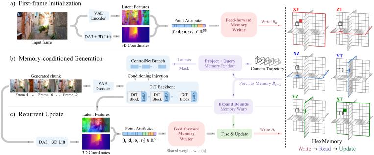
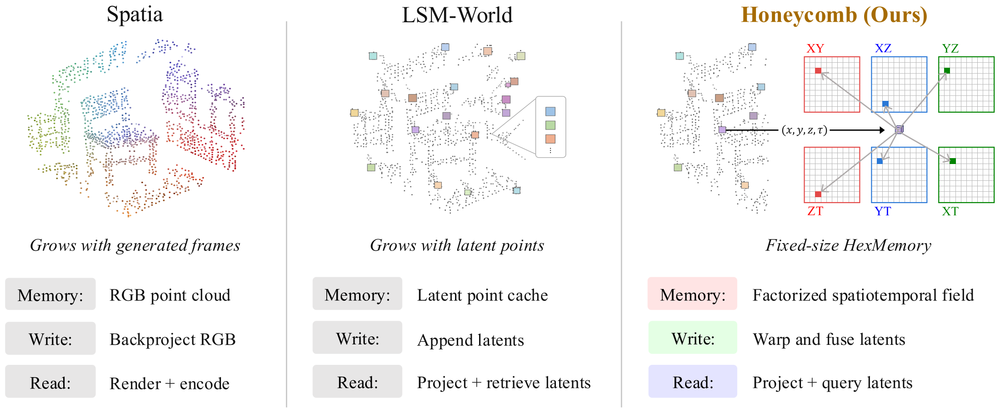
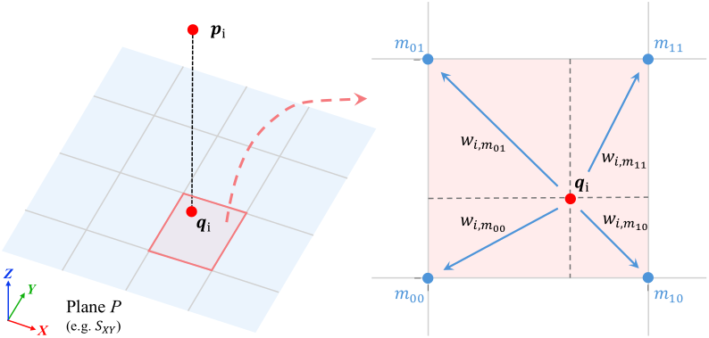
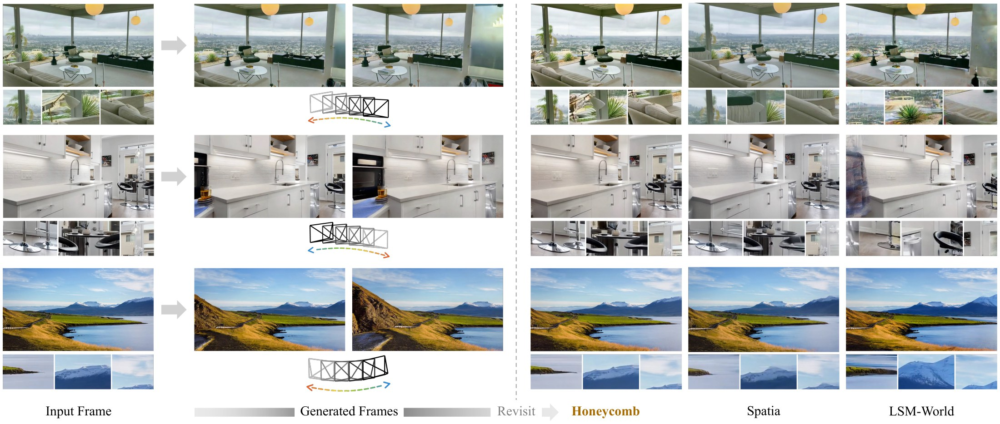

Paper under double-blind review
Video world models require persistent scene memory to maintain consistency during long-horizon video generation. Existing spatial memories accumulate RGB observations or latent features, increasing storage requirements as generation proceeds. We introduce Honeycomb, a video world model built on HexMemory, our proposed low-rank representation for storing scene features in a fixed-size memory with a total of six spatial and spatiotemporal planes. A feed-forward writer maps each generated chunk into new plane features. As the spatial coverage or temporal range expands, we warp the previous planes while preserving their dimensions, then fuse them with the new features through confidence-weighted pooling and a learned residual correction. A reader retrieves latents from HexMemory to condition subsequent video generation. The writer processes only observations from the new chunk, avoiding per-scene optimization and repeated processing of the full history. Experiments on WorldScore and RealEstate10K demonstrate strong video generation quality and robust revisit consistency while keeping HexMemory feature storage constant throughout generation.




Honeycomb generates 3 autoregressive chunks from a single input image along the RealEstate10K camera trajectory. Select an example to play it.
| Method | Average Score | Static Score | Dynamic Score |
3D Const | Photo Const | Style Const | Subject Quality |
|---|---|---|---|---|---|---|---|
| Models with 3D cache | |||||||
| WonderJourney | 54.19 | 63.75 | 44.63 | 80.60 | 79.03 | 62.82 | 66.56 |
| WonderWorld | 61.79 | 72.69 | 50.88 | 86.87 | 85.56 | 70.57 | 49.81 |
| Spatia | 63.21 | 64.88 | 61.54 | 83.26 | 89.09 | 83.33 | 46.66 |
| LSM-World | 61.20 | 62.69 | 59.70 | 80.88 | 76.10 | – | – |
| General video models | |||||||
| VideoCrafter2 | 50.03 | 52.57 | 47.49 | 65.14 | 61.85 | 43.79 | 56.74 |
| EasyAnimate | 52.25 | 52.85 | 51.65 | 67.29 | 47.35 | 73.05 | 50.31 |
| Allegro | 53.64 | 55.31 | 51.97 | 70.50 | 69.89 | 65.60 | 47.41 |
| Wan2.1 | 55.21 | 57.56 | 52.85 | 78.74 | 78.36 | 77.18 | 59.38 |
| Honeycomb | 65.52 | 68.01 | 63.03 | 82.29 | 85.76 | 84.21 | 46.28 |
| RE10K NVS | WorldScore closed-loop | |||||||
|---|---|---|---|---|---|---|---|---|
| Method | PSNR↑ | SSIM↑ | LPIPS↓ | PSNRC↑ | SSIMC↑ | LPIPSC↓ | Sharp.C↑ | FlowC↓ |
| ViewCrafter | 12.28 | 0.512 | 0.571 | 12.32 | 0.369 | 0.574 | 0.595 | 30.78 |
| FlexWorld | 13.17 | 0.567 | 0.544 | 12.86 | 0.430 | 0.602 | 0.213 | 55.77 |
| Voyager | 14.67 | 0.577 | 0.493 | 15.99 | 0.459 | 0.423 | 0.547 | 7.11 |
| Spatia | 15.58 | 0.616 | 0.390 | 17.20 | 0.517 | 0.327 | 0.571 | 6.07 |
| LSM-World | 17.46 | 0.636 | 0.452 | 15.12 | 0.460 | 0.463 | 0.889 | 27.05 |
| Honeycomb | 18.45 | 0.674 | 0.274 | 17.22 | 0.504 | 0.311 | 0.882 | 3.00 |
Maintaining scene consistency over long video rollouts requires persistent memory that can efficiently incorporate new observations. In this work, we introduce Honeycomb, a video world model with HexMemory. This design keeps feature storage fixed without reprocessing the entire history at each write. Experiments on WorldScore and RealEstate10K demonstrate better generation quality, novel-view synthesis, and revisit consistency. These results highlight the potential of recurrent feature memory for efficient and consistent video world modeling.
@inproceedings{anonymous2027honeycomb,
title = {Honeycomb: Constant-Size Scene Memory Representation for Video World Models},
author = {Anonymous},
booktitle = {Under review},
year = {2027}
}